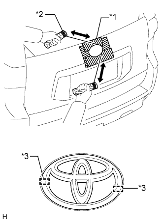
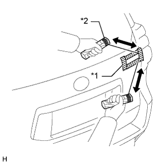

ТАБЛИЧКА ДАННЫХ ИЗГОТОВИТЕЛЯ (для задней стороны без кронштейна запасного колеса) > СНЯТИЕ |
| Параметр / Устройство | Температура |
| Кузов автомобиля | 40-60°C (104-140°F) |
| Эмблема | 20–30°C (68–86°F) |
| Табличка данных изготовителя на двери багажного отделения | 20–30°C (68–86°F) |
| 1. СНИМИТЕ ЭМБЛЕМУ |
|  |
Наклейте защитную клейкую ленту вокруг эмблемы.
Поместите струнную проволоку между кузовом автомобиля и эмблемой.
Привяжите к концам струнной проволоки предметы, которые могут служить в качестве ручек (например, деревянные бруски).
Потянув за струнную проволоку, удалите двухстороннюю клейкую ленту, которой эмблема прикреплена к кузову автомобиля.
Снимите эмблему.
| *1 | Защитная клейкая лента |
| *2 | Деревянный брусок |
| *3 | Выступ |
| 2. СНИМИТЕ ТАБЛИЧКУ ДАННЫХ ИЗГОТОВИТЕЛЯ С ДВЕРИ БАГАЖНОГО ОТДЕЛЕНИЯ |
|  |
Наложите защитную клейкую ленту вокруг таблички данных изготовителя на двери багажного отделения.
Поместите струнную проволоку между кузовом автомобиля и табличкой данных изготовителя двери багажного отделения.
Привяжите к концам струнной проволоки предметы, которые могут служить в качестве ручек (например, деревянные бруски).
Потянув за струнную проволоку, удалите двухстороннюю клейкую ленту, посредством которой табличка данных изготовителя на двери багажного отделения крепится к кузову автомобиля.
Снимите табличку данных изготовителя на двери багажного отделения.
| *1 | Защитная клейкая лента |
| *2 | Деревянный брусок |